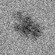
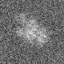

mrc2tiff
mrcファイルをgifファイルに変換する
オプション一覧
オプション
必須項目/選択項目
説明
デフォルト
-i
必須
入力ファイル設定
NULL
-o
必須
出力ファイル設定
NULL
-H
選択
閾値（最大濃度値を設定）
0
-L
選択
閾値（最小濃度値を設定）
0
-I
選択
インバース（色を反転させる）
0
-m
選択
モードを設定
0
-h
選択
ヘルプを表示
モードの詳細
モード
説明
0
8ビット
1
16ビット
******実行例******
------オプション指定なし------
------オプション -H------
-H=10で実行
------オプション -L------
-L=10で実行
------オプション -I------

------オプション -m------
-m=1で実行
